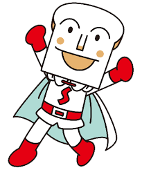

Shokupanman
Shokupanman (しょくぱんまん) is one of the main protagonists from Anpanman book series and Sore Ike Anpanman! anime series. He flies alongside his friends Anpanman and Currypanman. Also he has blue and pink clones of himself.
Description
Shokupanman has a white bread head, with a white outfit, a cape and red gloves, a red belt, red shoes, and he has an S on his chest standing for his name. He has eyes and eyebrows like Anpanman, with small circle cheeks and a wedge-like nose.
Personality
Shokupanman's silly, smart, and level-headed. Whenever he meets a new friend, he will often take their hand and dance with them. Although he's a kind person, he can be a little bit narcissistic.
Activities
Shokupanman supplies bread for lunch at the school, sometimes working alongside Currypanman, who makes delicious wasabi. Also he trends to be the most random in the superhero trio.
Powers/Equipment
Shoku-Punch - is Shokupanman's primary punch attack similar to Anpanman's move An-Punch.
White Truck - Shokupanman's usually drives his white truck for delivering bread, and it's used for combat.